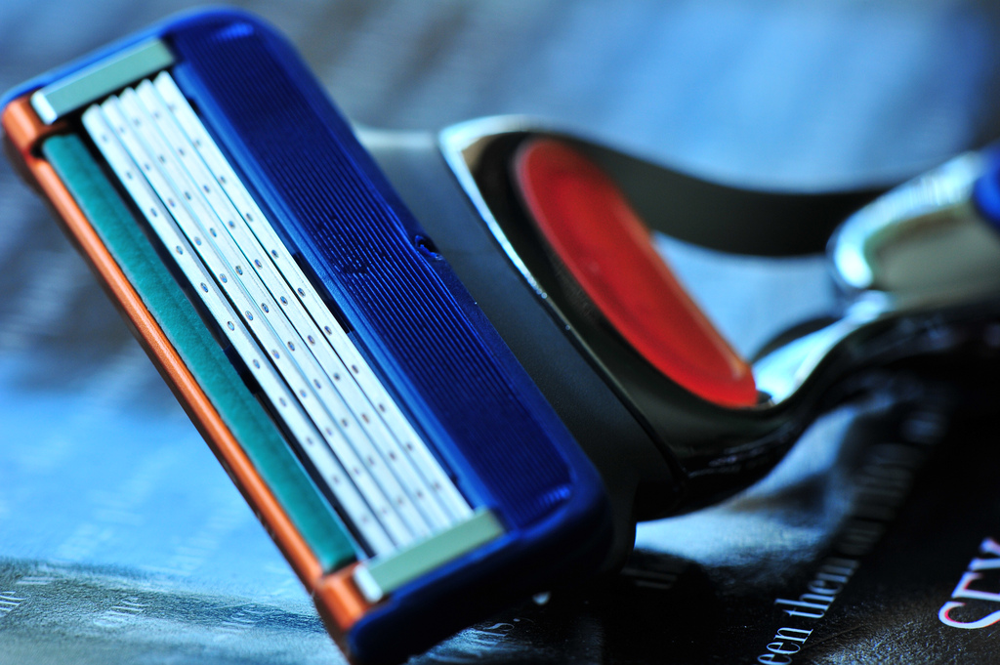
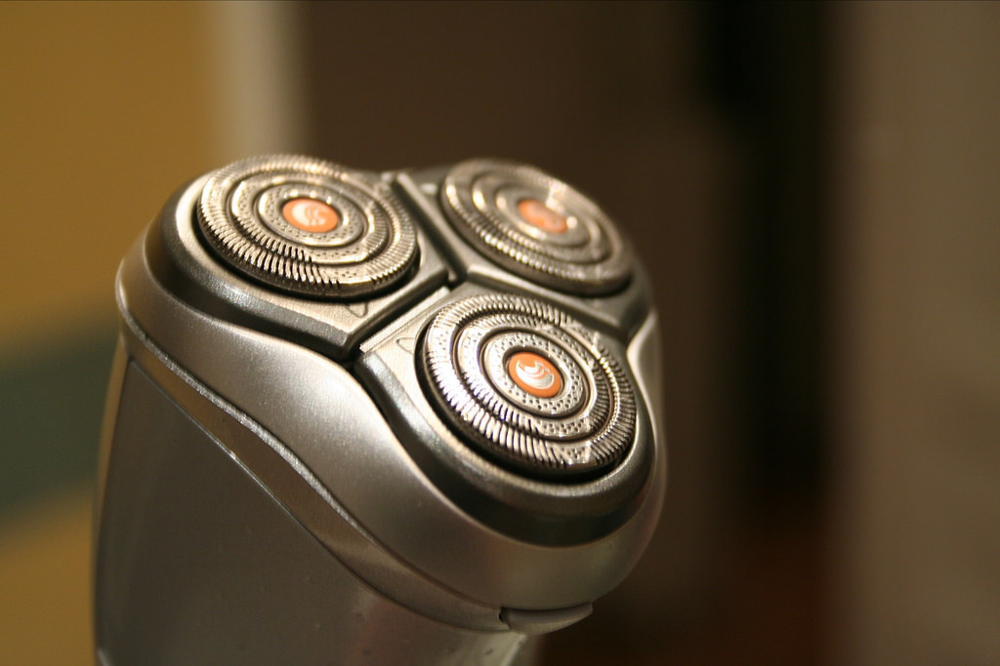
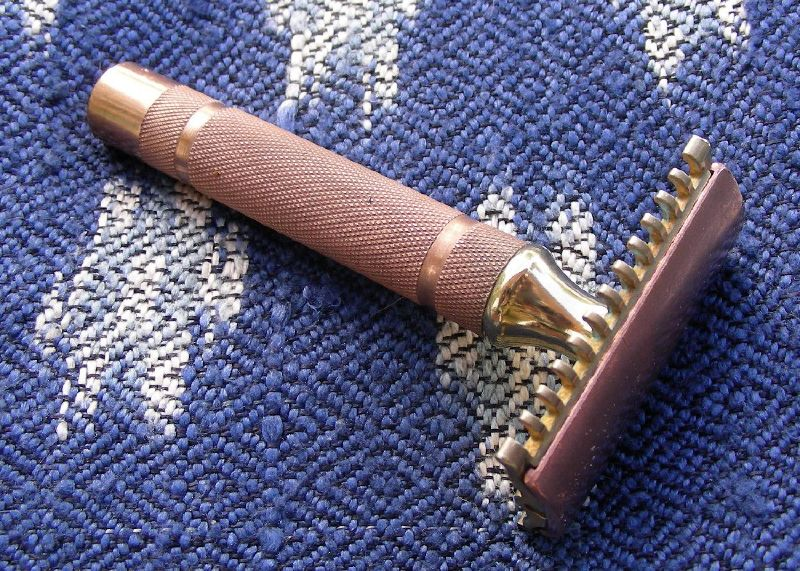
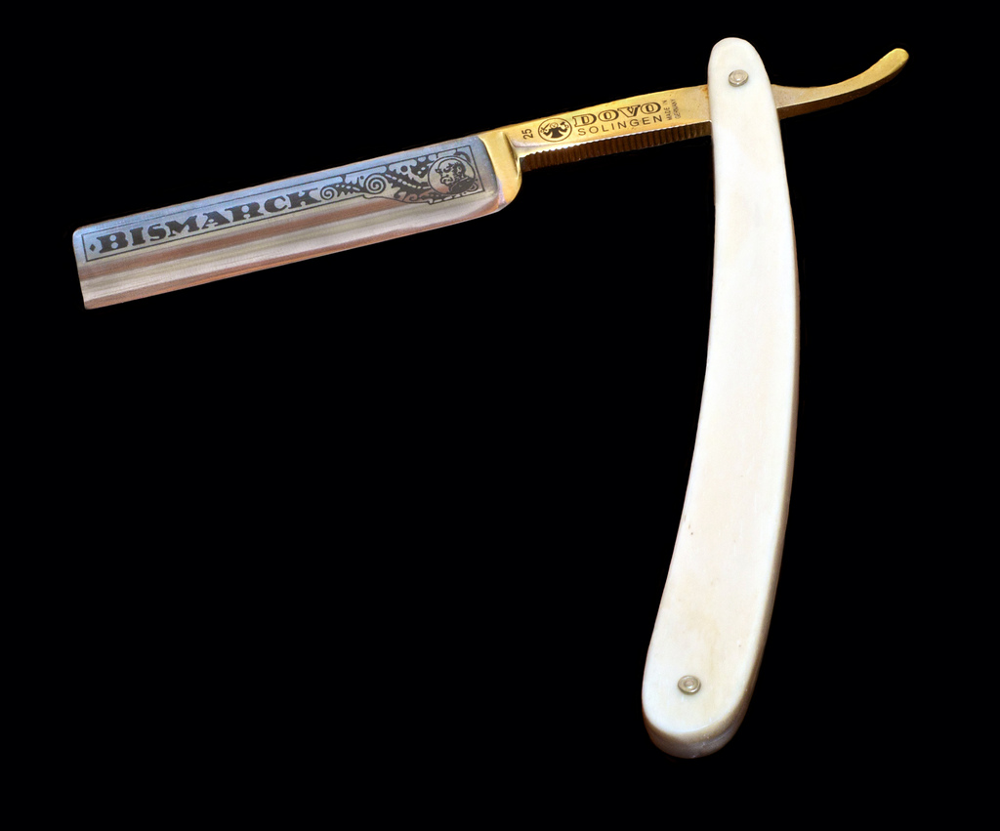
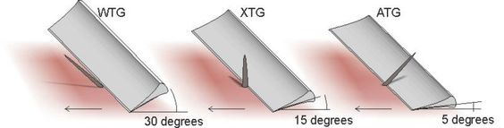
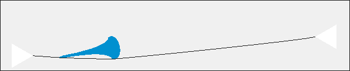

Most people shave with something like this

The number of blades may vary.
Or perhaps, if more inclined to use of modern technologies, with this

Maybe, it's becoming rarer and rarer these days, you are old-fashioned or have found it in your grandfather's closet so you shave with this

A double edge safety razor. Safety is an euphemism, such a razor is no way "safer" than any of the more modern ones, it was only safer than what was available before it.
Like this

Which is what I shave with.
Now you may be wondering: why using such a razor instead of the previous two kinds? Aren't those fine? Yes they are but are also far from perfect. Electric razors were very irritating for my skin, even using the ones that you shave with while showering or by moisturising the skin with a specific gel made my skin full of rashes and irritation. Not something I'd like to look in the mirror every day. Plain, disposable, razors were better but the quality of shaving was lackluster at most: great on the cheeks and lower neck, awful on the chin and higher neck. I felt like I was only partially shaving my face every time. Also, irritations were a lesser issue but were still present. They lasted only a few days too, after 1 week shaving quality dropped considerably . Double-edge razors didn't seem to offer great improvements over the modern Gillette-like disposable ones. Probably better shaving but you still had to substitute the blades every few days. More money, more waste of materials and more packaging to get rid of. I was unsatisfied with all shaving methods. I wanted something that could give me:
- Better shaving quality
- No or minimal skin irritation
- Cheaper (in the long run)
- More environment-friendly
- Badass factor ;)
Straight razors seemed to fit the bill. I bought the one in the photo above on Ebay. Pretty cheap, 44€, shipping included. Shaving soap I had already, as an old brush bought years ago by my father and left unused until now. I was ready to go then. This is what I learned in the first 2 months of using exclusively a straight razor.
"Shave-ready" does NEVER mean shave-ready
The straight razor I bought was used. It was "mostly shave-ready" according to the vendor. I trusted his assumptions and proceeded to shave with it without trying to hone it.
It was a bloodbath.
Only until I honed it with a couple of stones (more on this later) I realized that "shave-ready" means different things to different people and you can't really trust anybody outside of your own face's skin. That is the only real test. To sum it up:
- if it shaves well and comfortably, it's shave-ready
- if it shaves well but uncomfortably, it's NOT shave-ready
- if it shaves "ok", comfortably or not, it's NOT shave-ready
- if it doesn't shave at all, it's NOT shave-ready
- if there's blood all over the place, regardless of how it shaves, it's DEFINITELY NOT shave-ready
Only your face can tell you whether it's shave-ready or not. No other real test is enough to assess the sharpness of a blade. You shave with it, if it's comfortable and actually removes hair pretty well, it's shave-ready. Of course all this assuming that your technique is at least ok; in most cases it's not so check how you swing the razor, at which angle and how much pressure you are putting on your skin with it first. With an ok technique, the above list stands valid. Just don't discard an otherwise fine razor because your technique isn't good enough.
Which razor to buy?
It doesn't really matter. Really. Straight razors aficionados will talk about Thiers-Issard, Solingen steel, Damascus steel blades and whether carbon steel is better than stainless steel to no end. Forget about this for the moment. Any decent, as in free of holes, not covered in rust, razor will do as your first. Any will shave well once they are shave-ready. Buy the first you find that is within your budget, don't rush to buy the "best" one as you may end up assuming that it should shave better than the others only because it is more famous. You could be very much deluded by it if your technique isn't on par with the quality of the blade. Bad technique = bad shaving, good technique = good shaving. The blade isn't that important.
Did I say that technique is important? :)
Honing
So you have your brand new straight razor. Let's assume it is not really shave-ready, as probably it won't. How do you make it sharp and smooth on your skin?
By honing.
And how do you hone a razor?
With a honing stone.
First of all, if you are not patient, forget about honing altogether. Buy a REALLY shave-ready razor and 2-3 times a year send it to a professional honer to restore the sharpness. There are experts on Ebay that can make it sharp for you before shipping or you may find local ones, better, that will do it for you the first time for a few bucks. A few more money spent but a lot more time for you saved. Honing isn't something you can learn in 1 week or 1 month, and perhaps not even in 1 year; I for sure didn't master it in just 2 months. It is very complicated, it requires some level of passion to be good at it. You have been warned.
Another thing: make a shave which is rusted or has holes or any other kind of physical serious damage, shave-ready isn't honing but restoring, and it's much more complicated. Don't bother with that, leave those razors to experts or professionals. You'll waste a lot of time and money trying to restore such a razor without any experience. The chances that you may fail, get frustrated and give up altogether on straight razors would be very high.
So let's buy also a stone. Not every stone will do, obviously. Don't start picking stones on the street hoping they will make your razor shine. It's highly probable that you'll end up destroying it forever instead. Don't do that. Choose a stone that is made for honing. Honing stones are categorized in how many grits they are. Grits being the level of granularity, or coarseness, they are. The lower, the more coarse a stone is. For honing a razor that has the duty of passing millimeters from your skin, you want stones that can produce a very fine edge, nothing coarse that will make your face look like butchered after a few passes. So any stone below 1000 is too coarse for a razor. Unfortunately those are the cheapest ones and the easiest to found. Life sucks sometimes, sorry. What you should aim for are stones that are between 1200-5000 grits, with the best combo being 1 of 1200-1500 and another, a "finishing stone", of 3500 or above grits. You could do with a single stone, very fine, but it depends on the original state of the razor; if it's not optimal, you may waste time trying to make a sharp edge with a stone too fine for the task.
Yes, honing is complicated. I told you.
There are many types of stones but all can be divided in 2 main categories:
- Natural stones
- Artificial stones
Without going into great detail about the characteristics of each as it would make this post book-long, let's overgeneralize by saying that artificial stones are a tad easier to use while natural stones make a more gentle edge, resulting in a smoother shaving experience. It's a very broad generalization though. For names, very good artificial stones are Nortons, Shaptons and a few Japanese brands, while natural ones are the Belgian Blue, Coticule, Thuringians, Eschers (not that Escher ). You may mix, thus having 1 artificial and 1 natural stone to be used together. That's ok. Actually it is even recommended as you'll get the best of both worlds. Usually the natural one will be used as the finishing stone but that's not a law.
The actual process of honing includes lots of different techniques, a great deal of experience and tons of patience. I am not knowledgeable enough to explain it all here; I'm still practicing myself and learning each time a bit more. For a practical how-to on honing, I'll send you, again, to the excellent page on the Straigh Razor Place Wiki about honing. Just a few advices: don't put too much pressure when swinging, do it slow, use a tape to protect the spine of the razor, be sure your stone is lapped (another complicated process that is meant to make the honing stone perfectly flat) and take your time in honing. No master honer was ever in a rush.
Preparation
What, you don't prepare your skin before shaving? No, no, no, that's not how you shave with a straight razor. Remember, this is like using a knife on your face, only sharper. It's not like with a multiblade razor that does some skin stretching for you (ever wondered what's that gummy part before the blades for? Yeah, this) or an electric one that basically shaves on its own with you just having to pass it over your face. No. You are on your own here and the blade is incredibly sharp (or if it's not, it should before you try shaving with it). Straight razors actually remove the first layer of your skin along with hairs, they are more accurate, surgical accurateness, than the other razors. You got to have your skin ready for the blade. And a firm hand, but this I bet you guessed already.
Therefore, use a good shaving cream. The cheap kind is ok-ish, it'll do at first, but you'll soon realize that those people that plays with chemicals in the backyards like they are Walter White to make their own shaving soap/cream aren't crazy: a great soap makes moving the blade on your skin smoother, nearly effortless. It reduces irritations when the skin isn't accustomed to the blade yet and it make possible perfect adherence between the tip of the blade and the skin underneath, which is the situation you want to be at all times to cut with the least pressure and maximum results.
You can use any shaving cream, it's not as important as the technique or the sharpness of the razor. You'll have great results anyway. But if you are willing to invest in a good cream you'll have even better results. It's worth it.
So how do you prepare the skin? Wash it, thoroughly. This should be the norm with any form of shaving actually but most people forget it or are too much in a rush in the morning to dedicate the time to wash themselves as they should. Use cold or hot water, as you see fit. There's not a fixed rule here, some prefer cold and others hot. Experiment. I prefer cold as it is less aggressive on the skin. Wash your face and apply a moderate (no need to have 3 centimetres of cream on your face...) amount of shaving cream. Then shave. I assume that you already know the stretching part. But perhaps you never paid much attention, especially if you shave with an electric razor. You should stretch your skin in the opposite direction you are moving the blade across your face. If going upwards, stretch the skin downwards and viceversa. Stretching will make easier for the razor to glide on your face by making it adhere much closer to the skin and presenting a plain surface over which it can pass. Most of the "bumps" you may experience while shaving with a straight razor are due to the skin not being stretched enough. The more the better here. You have two hands and only one can wear the razor, make use of the second. Most of the time the small cuts you may get are due to the skin not being perfectly stretched.
Technique
Technique is king. You can't assume you just swing the razor up and down and voilà your face look like a baby's ass. Not at all. Technique is huge, huge, HUGE. Can't stress this enough. It's infinitely much better to shave with a cheap blade but with perfect technique than having the most expensive razor ever made and being a total newbie. If you don't learn at least at average levels the technique, you WILL cut yourself. Period. I assure you. There's no room here for "oh but I am better than most men, my hand is firm...". NO! You are not, trust me! Thinking along this way will only results in a face crisscrossed in blood. Every. Single. Time.
So, how do you shave with a straight razor? There are 3 methods:
- WTG: "with the grain". You shave following the direction of the growth of the hairs. It's the simpler, safer method but also the one that cuts less hairs. You usually make a first pass WTG and then do a second or even a third with the other methods.
- XTG: "across the grain". If your hairs grow horizontally, this means shaving vertically. And vice-versa. This is usually pretty effective and enough to have a pretty good shaving. Some don't do it though, preferring the next method along with WTG, others only do this pass and nothing else. Again, experiment.
- ATG: "against the grain". This is where you bleed if you aren't super-careful. As you have already guessed, this method means going in the opposite direction of the growth of your beard. For most men this means going upward but there are some (like me) who have a hairs growing horizontally or obliquely so you must shave in different directions according to which part of your face you are currently shaving. It's harder than it seems.
The 3 different methods can be combined (usually it's a WTG pass followed by a ATG pass). Experiment yourself, there's no fixed rule you have to follow here. Too much depend from the skin and the directions your own hairs grow. What you have to follow is the cutting angle: 30° for WTG passes, 15° for XTG and 5° (or even completely flat) for ATG. An image may be easier to understand:

If you find the blade isn't moving or bumps here and there, it's nearly always because of a wrong angle. Check it.
Stropping
So you have now shaved with your new straight razor, with whatever technique you chose, washed your face from cream remnants and feel pretty smug that you have learned a nearly forgotten art from your granddaddy time. You think you are done now, right?
No.
You need to strop the razor. After washing it and removing any drop of water left on the blade (water leads to rust, there should never be any water on the razor after use). But what's stropping and what's it for?
Stropping is the process of "straightening" the blade. Contrarily to honing, which is the process of creating an edge to a blade that hasn't one or restoring a damaged one, stropping is simply a maintenance process for a blade. It re-aligns the blade edge after a shave. Every time you shave with a straight razor, the blade gets slightly bent or chipped. You can't see it and it may seem weird that a bunch of hairs can chip a metal blade but they do, all the time. Stropping doesn't remove material as honing does, it just prevent the edge to bend too much and removes micro-chippings that may have been created by shaving. If you didn't strop, over time, usually a few weeks, the blade would lose its edge, be less sharp and consequently, shave worse. You won't harm yourself if you don't strop, but you'll need to hone it again to have a comfortable and efficient shaving experience again.
To strop then you need a razor strop, which is a strip, usually a few centimeters wide and half an arm long, made of leather (sorry vegans!) that may or may not have a second side of linen, webbed fabric or cotton. The leather side is what is used to stropping, the other side is like a finishing side, after stropping, or needed before it, when you have a dull blade that is not very sharp but not as bad as needing honing again. A borderline blade, so to say. Some people find this second side, with a different fabric material, useful, others don't. For beginners, just care about buying a good strop with good quality leather and forget about any second side. You just need the first, really. Don't make it too complicated.
Stropping is performed by passing your razor over the strop, leather side, a few times (I use 20 for each side of the razor) to keep its sharpness. Nearly all strops have a way to be hanged somewhere. Exception being paddle strops which are to be put on a firm surface like a table. Avoid them, unless you are absolutely sure you won't have available a stable, non-moving point in your house. You could try using a door handle or similar, but it will make stropping more difficult as it won't be as stable. Hold, strongly, the other side of the strop with your free hand and start passing your razor, with the spine first!, over the strops' surface, back and forth, until it restores its sharpness. The exact movements are a bit complicated to explain but

will make it clear for everybody: pass the razor over the strop with the spine first and never let the edge pass alone, with or without pressure from your hand. Don't press too much, let the blade glide over the leather. If it doesn't pass smoothly, you aren't doing it correctly (or the strop is damaged or of bad quality). Be easy on the blade, you aren't trying to remove any metal, just prevent it becoming dull. There's no need to apply even a quarter of the pressure you would when honing it, be gentle.
As with shaving, there are different techniques you may implement when stropping. Diagonal, straight, zig-zag, etc. I won't explain them, I don't believe they are that important. Do it straight for now, experience will tell you when and if to change.
It takes some practice to know for certain how long, how many passes, you need to perform good maintenance on your blade. It depends also on how long is your beard, how hard are your hairs and the kind of shaving cream you are using. Too many factors. I stabilized on 20 passes per side and it seems ok, most of the days. Again, experiment.
Finishing touches
After shaving, washing and stropping, you're nearly done. Remove any residual water there may be on your razor with a cloth, put it back wherever you chose to as long as it's not near any form of water or under direct sun; keep your strop dry too and remember to wet your natural honing stones once in a while to not let them completely dry (they may crack otherwise).
You're finally done. Most definitely your first shave with a straight razor won't be as satisfying nor accurate as you'd expect. Check your technique. With more experience, it will improve and with it the shaving quality. Don't be discouraged if after some days or weeks you feel that you aren't shaving as good as you were with your previous shaving method. It's normal. This is closer to an art, a long and nearly lost art, than the other methods. Nobody could be a great painter or musician in a week. Be gentle and patient and better results will come. To keep yourself motivated, keep in mind that there's no other shaving method that can approach the smoothness and accurateness that a straight razor will give you after you mastered the art. No one. Enjoy the feeling of having a smooth as a baby face and having been nice to the environment.
P.S.: infinite thanks to the Straight Razor Place community for the astounding amount of passion and info poured into the art of shaving. Invaluable help for any beginners
Photo Courtesy: Gillette, Electrical Razor, Safety Razor, Straight Razor
Tweet Go Top
comments powered by Disqus